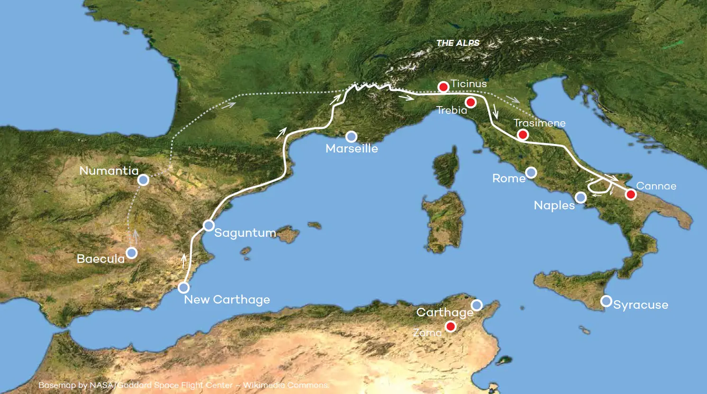

Prelude to the Battle
As mentioned on the intro page we have touched on a few of the major events. I have put a short video to hopefully catch people up on the First Punic War. The main part that I want to focus on is the Barcid interbellum and the early stages of the war, where after the loss of Sicily and the Mercenary War, Hamilcar, Hannibal’s father, left Carthage to create an offshoot fiefdom of his own in Spain. In 237BC Hamilcar arrived in Iberia and began expanding on the extant Carthaginian powerbase. Gaining strength as well as securing the silver and gold mines in Southern Spain Hamilcar’s actions bought a large chunk of the Iberian peninsular under his sway. Upon Hamilcar’s death his son-in-law Hasdrubal took over the rulership of Spain and further solidified the gains of Hamilcar, through diplomacy rather than military victories. This included a treaty signed with Rome to not cross the river Ebro in modern day Cantabria. Hasdrubal, however only ruled for 7 years before being assassinated and so Hannibal was given the command of the Spanish section of the Carthaginian empire. In two years he campaigned heavily against the various tribes in Spain. Rome reached out to the city of Saguntum, within the province of Valencia, but importantly South of the Ebro, and offered protectorate status. This move felt in Hannibal’s eyes to be a breach of the treaty signed with Hasdrubal. Using this as a pretext Hannibal besieged the city and sent the majority of the plunder back to Carthage itself, gaining himself immense popularity in the city and within the corridors of power. He used the war on Saguntum to launch his offensive against Rome. While the Romans gathered forces to invade Spain and take Hannibal on his home turf so to speak, Hannibal committed his army to one of the most audacious maneuvers in military history a forced march through Spain, France and across the Alps into Northern Italy.
Following the march he begins a campaign on the Italian mainland that stretches from 218BC - 204BC. His notable early victories at Trebia where Hannibal demonstrated his ability to use terrain and take away the Romans greatest strength, their heavy infantry. Engaging it from the front while ambushing them from the flanks and rear. He followed this up with the ambush at Trasimene, where he set an ambush that resulted in the death of the consul at the time Flaminius and thoroughly destroyed or captured his army, leaving the path to Rome open. In a panic the Roman appointed the dictator Quintus Fabius Maximus Verrucosus, who avoiding direct conflict with Hannibal attempting instead to encircle him and prevent him having free rein over the Roman territories. Fabius’ position however was unpopular and after Hannibal eluded him at Ager Falernus, using a herd of cattle to distract the Romans to open an escape route and sending his army on a night march, he was relieved of command and the two consuls mentioned in the introduction were appointed. Paullus had already been feted in Rome with a triumph and the Romans began assembling the largest army put to field.
